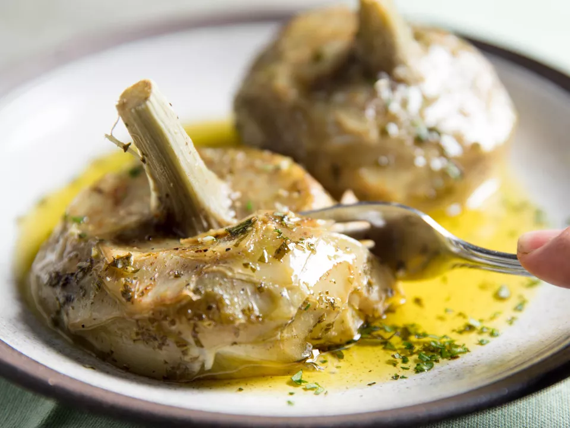

Carciofi alla Romana
Braised Roman-style artichokes are cooked gently in a mixture of white wine, olive oil, garlic, and herbs.
Preparation & Cook Time
40 mins
Ingredients
2 whole lemons (for maintaining artichokes' color), 4 large or 12 small artichokes (2 pounds; 1kg) , 1/4 cup (7g) minced flat-leaf parsley leaves , 2 tablespoons minced fresh mint leaves , 2 tablespoons minced fresh oregano leaves , 3 medium cloves garlic, minced , 1/4 cup (60ml) extra-virgin olive oil, plus more for drizzling , 1/4 cup (60ml) dry white wine , Kosher salt and freshly ground black pepper
Directions
| 1 | Fill a large bowl with water; halve and squeeze 2 lemons into it. Trim artichokes by cleaning them down to the hearts, following the guidelines shown here: Using a serrated knife, cut off top of artichoke and bottommost part of stem. Using a paring knife or sharp vegetable peeler, trim away the tough outer leaves to expose the tender inner leaves and heart. Trim away fibrous outer layer around stem to expose tender inner core (if stem breaks off, that's okay; just save it and cook it alongside the hearts). Using a spoon, scrape out the inedible, hairy choke in the center of each heart. Transfer cleaned artichokes to bowl of lemon water as you work, covering them with a clean kitchen towel to keep them completely submerged. |
|---|---|
| 2 | In a small bowl, stir together parsley, mint, oregano, and garlic. Rub concave side of each artichoke heart with herb mixture, packing it into any leafy crevices. Set aside remaining herb mixture. |
| 3 | Add olive oil and wine to a pot just large enough to hold all the artichokes closely side by side, so that they can sit flat with their stem sides up. Arrange artichokes in pot and season with salt and pepper. |
| 4 | Bring pot to a simmer over medium-high heat, then lower heat to a bare simmer, cover, and cook until artichokes are fork-tender, 20 to 30 minutes. (Smaller artichokes may not take as long.)Remove from heat and transfer artichokes to a platter, stem sides up. Drizzle with cooking juices, along with some fresh olive oil and a light sprinkling of reserved herb mixture. Serve warm or at room temperature. |
Nutrition Facts
Center aligned text on all viewport sizes.